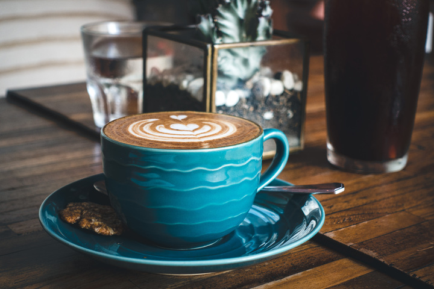

Capuccino Caseiro
Uma combinação cremosa e reconfortante de café, leite e um toque de canela, perfeita para recarregar as energias e compilar seu código sem nenhum bug.
Ingredientes principais:
- Café solúvel
- Leite em pó
- Canela em pó
Uma combinação cremosa e reconfortante de café, leite e um toque de canela, perfeita para recarregar as energias e compilar seu código sem nenhum bug.

O equilíbrio perfeito entre a intensidade do café expresso e da doçura da calda de chocolate — a pausa ideal entre uma compilação e outra.